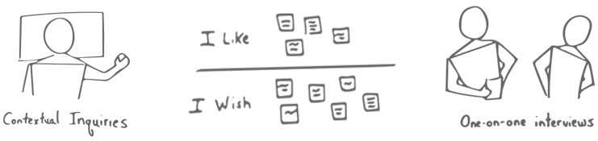
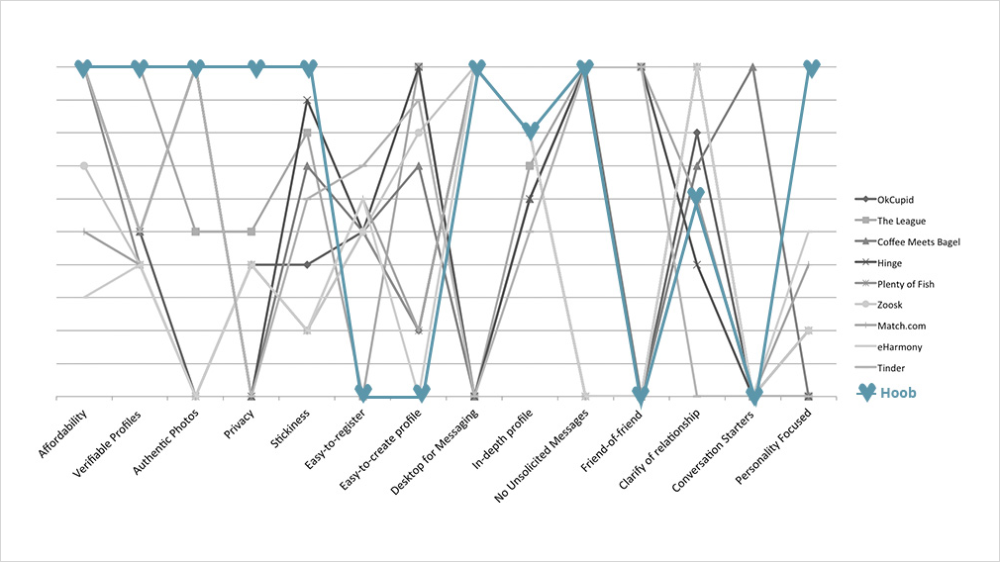

A dating app that focuses on personality first, looks second. People are matched like Tinder, but the photos are blurred. As you message someone more, their photos slowly start to un-blur.
I conducted various user research activities with 4 men and 4 women.
Peter Theil says "Competition is for losers," and for the most part, I agree. When conducting competitive analysis, I followed a popular consulting practice called The Blue Ocean Stragey. The methodology is intended for listing out a company's competitors, their advantages, and how much users value those advantages with the goal of finding an area for that company to attack.
From my user research and blue ocean strategy competitive analysis, I synthesized my notes into four key insights written from a user's perspective.
1I want to strike up conversations with others I find interesting but I'm unable to get the time of day because I'm judged by my photos. At the very least, I want to be friends and ask them about the interesting things on their profile!
2I want to know who I'm chatting with is real, but I also don't want them to be able to figure out exactly who I am before I share that information with them.
3I want to understand the type of relationship the other person waht's to be in right off the bat.
4My dating site experience shouldn't be a chore or a task. Working hard to find matches, respond to messages, and sort through profiles is something that I'd prefer to be as easy as possible.
Users read the profiles that are shown and either express interest or pass on a particular person. If both people express interest in one another, the photos become slightly less blurry and they now have the ability to message one another.
As users message one another, they learn about each other and their photos slowly start to un-blur. Photos un-blur only after messages have been reciprocated.